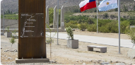

Ruta Cruce del Ejército Los Andes
Sigue la épica huella del Ejército Libertador del General San Martín y Bernardo O'Higgins que ingresó a Chile por los pasos cordilleranos de Putaendo en 1817. Un recorrido por monumentos históricos, hitos heroicos y los impresionantes paisajes de la alta cordillera andina.